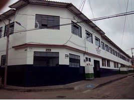
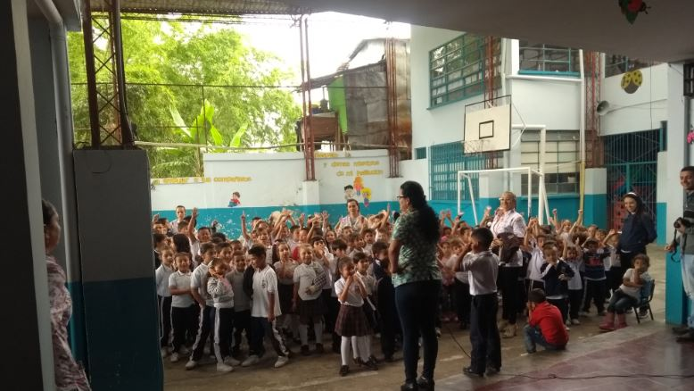
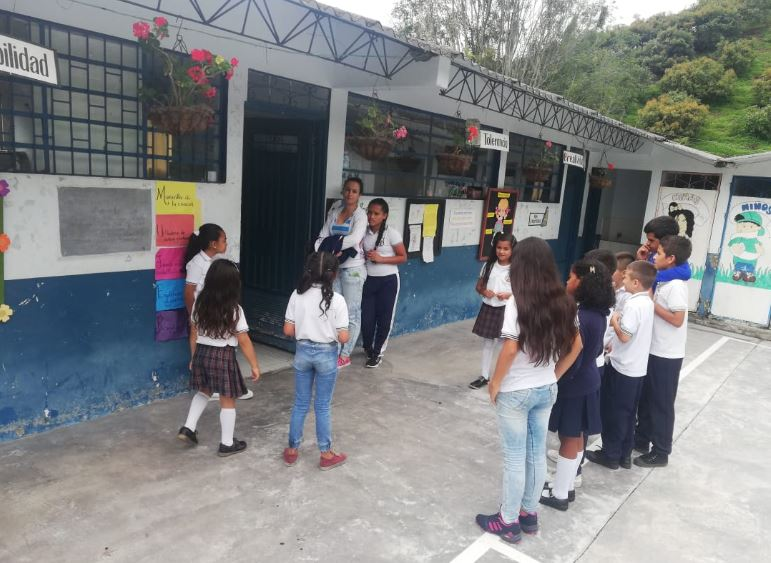
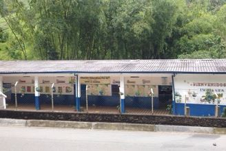
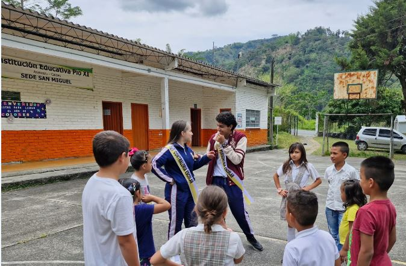
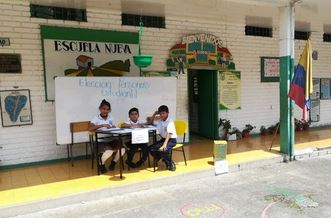
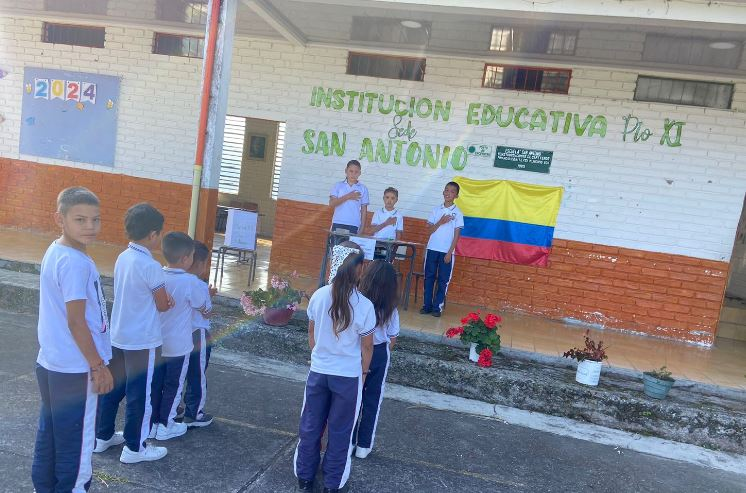
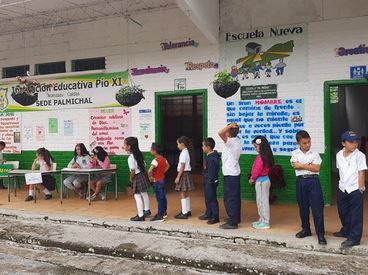

Nos esforzamos para que nuestros estudiantes reciban una educación
de calidad y alcancen sus metas.
Conoce las Sedes Educativas
Nuestra Sede Principal
Está ubicado en la Carrera 6 No. 4 -01; como sede principal ofrece a la comunidad Educación de calidad en los niveles de Básica Secundaria y Media vocacional con programas de Formación en Articulación con el SENA: Técnico en Sistemas y Técnico en Programación de Software.
Actualmente posee en sus instalaciones una cancha polifuncional que cuenta con las especificaciones técnicas deportivas actuales; además de otros ambientes que permiten una adecuada educación de todos los matriculados.Entre otros espacios, posee los espacios para el aprendizaje de las artes musicales de la banda Estudiantil de Música.
Sedes Urbanas:
Sede Manuel Gutiérrez Robledo

Ubicado en la carrera tercera con calle 4a, sector la Pampa. Este centro atiende a la comunidad en el servicio educativo de los niveles de Preescolar y Básica Primaria. Allí también se encuentra la oficina de Direccíón de Núcleo de belalcázar.
Sede Manuela Beltran

Ësta es una pequeña Sede que se encuentra en el Barrio La Floresta, en la salida que comunica a nuestro Municipio con la Ciudad de Manizales. Allí se ofrece a la comunidad los servicios educativos en los Niveles de Preescolar y Básica Primaria.En esta sede se trabaja bajo el modelo Educativo de Escuela Nueva.
Sedes Rurales:
Sede Rural Eladia Mejía

Escuela Rural ubicada en la Vereda La Honda del municipio de belalcázar. Antes de la fusión educativa, ésta Sede era el estalecimiento principal del denominado "Centro Educativo Eladia Mejía".
Esta sede ofrece el servicio educativo en los niveles de Preescolar y Básica Primaria bajo el Modelo Pedagógico de Escuela Activa, metodología Escuela Nueva.
Sede San Miguel

Escuela Rural ubicada en la Vereda Varsovia del municipio de belalcázar. Atiende Población tanto de la vereda como de zonas aledañas del municipio de Filadelfia. Esta sede ofrece el servicio educativo en los niveles de Preescolar y Básica Primaria bajo el Modelo Pedagógico de Escuela Activa, metodología Escuela Nueva.
Sede Puerto Samaria

Escuela Rural ubicada en la Vereda Puerto Samaria del municipio de belalcázar. Atiende Población de la vereda y de zonas como Sardinas y La Bodega. Esta sede ofrece el servicio educativo en los niveles de Preescolar y Básica Primaria bajo el Modelo Pedagógico de Escuela Activa, metodología Escuela Nueva.
Sede El Jardín - La Hondita
Escuela Rural ubicada en la Vereda La Hondita del municipio de belalcázar. Esta sede ofrece el servicio educativo en los niveles de Preescolar y Básica Primaria bajo el Modelo Pedagógico de Escuela Activa, metodología Escuela Nueva.
Sede San Antonio

Escuela Rural ubicada en la Vereda San Antonio del municipio de belalcázar. Atiende Población de la vereda y de sectores como La Quiebra y la parte alta de El Jardín. Esta sede ofrece el servicio educativo en los niveles de Preescolar y Básica Primaria bajo el Modelo Pedagógico de Escuela Activa, metodología Escuela Nueva.
Sede Palmichal

Escuela Rural ubicada en la Vereda Palmichal del municipio de belalcázar. Esta sede ofrece el servicio educativo en los niveles de Preescolar y Básica Primaria bajo el Modelo Pedagógico de Escuela Activa, metodología Escuela Nueva.
Sede Diamante Bajo
De acuerdo al modelo activo de participación y construcción, el
perfil del auxiliar administrativo de la I.E San Isidro debe apuntar al
fortalecimiento de las dimensiones y actitudes emprendedoras que le
permitan un desempeño eficiente y eficaz propias de su cargo.